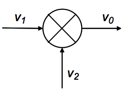
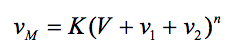
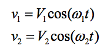
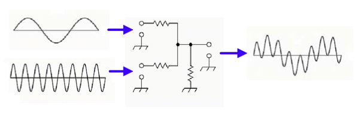
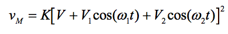
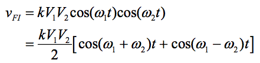
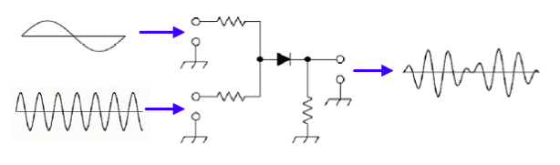

Mescladors
Els mescladors, igual que els amplificadors i oscil·ladors, constitueixen elements indispensables dels sistemes de comunicacions. S'utilitzen tant en transmissors com a receptors, quan és necessari traslladar els senyals en bandes d'óna base a una de banda de pas (modulació) o d'una banda de pas a una altra banda de pas (conversió). Un mesclador és un dispositiu no lineal, al qual s'apliquen dues senyals d'entrada, d'amples de banda diferents, i produeix una senyal de sortida de un altre ample de banda, generalment en dues bandes o més, una d'igual a la suma i altra a la diferència dels amples de banda dels senyals d'entrada. Això és cert a mitges i valgut només si a la sortida del mesclador s'utilitzen filtres adequats, ja que un mesclador produeix en general, un nombre de senyals de sortida que es designen com espuris, que cal eliminar.
Un concepte important en aquest tema, és que no s'ha de confondre un mesclador amb un sumari dor. Aquest últim, és un dispositiu lineal que pot considerar com un combinador de senyals, bé sigui en potència o en voltatge, però mantenint l'espectre de cadascuna de les senyals sumades. El mesclador és un dispositiu tiu no lineal que trasllada i modifica l'espectre de les senyals barrejades, però no les suma, les multiplica en el domini del temps. Això és alguna cosa, conceptualment molt important i sovint solen barrejar-se o amb-fondre aquests conceptes. El símbol habitual del mesclador es mostra a la figura següent.

Símbol del mesclador
Un mesclador té dos ports d'entrada i un de sortida. En una de les entrades s'aplica, en general, el senyal d'un oscil · lador local i en l'altra, el senyal que es vol traslladar en l'espectre de freqüència i que pot ser o bé una senyal en banda base o una senyal modulada de radiofreqüència. Una manera simple d'interpretar el comportament d'un mesclador és com un multiplicador, en què el senyal de sortida és el producte de les dues senyals d'entrada. Els mescladors s'empren per traslladar senyals en una banda de l'espectre a una altra banda. Si el senyal d'entrada és una senyal en banda base, el mesclador és, essencialment, el modulador. Encara que els mescladors són igualment importants en els transmissors i en els receptors, la terminologia tradicionalment utilitzada es refereix mes als receptors, ja que va ser en aquests equips en què es van començar a utilitzar extensament en els inicis de la ràdio, amb la invenció del receptor superheterodí. Així a la senyal modulada d'entrada se li designa com RF i l'altra senyal d'entrada, de freqüència fixa, utilitzada per traslladar l'espectre de freqüència de la senyal de RF a una altra banda, se la designa com a portadora local i és generada per un oscil·lador local (LO o OL). La sortida del mesclador es designa com a freqüència intermèdia (FI). Si la FI de sortida és inferior a la de RF d'entrada, es diu que el mesclador realitza una conversió descendent, en cas contrari, la conversió és ascendent. El terme convertidor o conversor s'utilitza per designar un circuit que conté al mesclador i al oscil·lador local.
Tots els mescladors són multiplicadors, en el sentit que el senyal de sortida que produeixen es pot descriure matemàticament com el producte de les senyals d'entrada. No obstant això, des del punt de vista d'implementació, un mesclador donat pot caracteritzar-se com additiu o multiplicatiu, depenent de la forma en què se li apliquin les senyals de RF i OL. La barreja additiva passa quan les senyals de RF i OL s'apliquen en sèrie al mateix port d'entrada. En realitat, aquesta barreja additiva passa després per un dispositiu no lineal, com un díode, que produeix una resposta multiplicativa. La barreja directament multiplicativa passa quan les senyals de RF i OL s'apliquen a ports separats.
Teoria bàsica dels mescladors
Els mescladors són dispositius no lineals, les característiques del qual poden ser diferents, depenent dels dispositius particulars empleats. Independentment d'això, la característica de transferència d'un mesclador pot expressar com:

On l'exponent, n, no és necessàriament sencer. V pot ser un voltatge de c.c. o pot ser zero. K es el factor d'atenuació o guany. I els voltatges de senyal v1 i v2 en el cas mes simple poden expressar-se com:

On V es l'amplitud del senyal, i ω la frequència. Sent v1 i v2 senyals sinuidals.
Si n = 1, el dispositiu és lineal i és un sumador, no un mesclador i, a la sortida, com es mostra a la figura següent, són presents les dues senyals d'entrada sumades o superposades, sense altres components espectrals més que les originals.

Sortida en el domini del temps d'un sumador (n=1)
Per al cas en què n = 2, tenim:

Aquesta senyal de sortida seria la que s'obtindria amb un dispositiu de característica quadràtica com un díode. Un valor diferent de n donaria com a resultat la generació d'altres productes de barreja, però això és suficient per comprendre el procés.
La sortida inclou un termini de corrent continu i un cert nombre de components espectrals, de les quals en aquest cas, no són d'interès ni la component de cc ni les que només contenen les freqüències ω1 o ω2, ja presents a l'entrada. Ignorant aquests termes a la sortida i assumint, sense pèrdua de generalitat que el voltatge V de cc és zero, la sortida a freqüència intermèdia aquesta donada per:

La següent figura ilustra el resultat de la funció anterior. Hi tenim dos senyals d'entrada a freqüències ω1 i ω2 amb amplituds V1 i V2 respectivament. A la sortida tenim, tal i com indica la funció de dalt les freqüències ω1+ω2 i ω1-ω2 centrades al voltant de la major de les dues i amb una amplitud [kV1V2 / 2]

Sortida en el domini del temps d'un mesclador (n=2)
A la figura s'il·lustra la funció del mesclador en el domini del temps. El circuit és molt similar al del sumador, excepte per l'element no lineal, en aquest cas un díode. La senyal en el punt d'unió de les dues resistències d'entrada és la mateixa que té a la sortida del sumador, és a dir, la suma de les dues senyals. No obstant això al passar pel díode, les dues senyals d'entrada de fet es multipliquen, de manera que el senyal de sortida no conté components espectrals a les freqüències de les senyals d'entrada. Les components espectrals de la senyal de sortida són les de suma i diferència de les freqüències d'entrada.
Si les senyals d'entrada són de la mateixa freqüència i difereixen només en l'angle de fase, φ, la sortida del mesclador és 1/2 kV1V2 cosφ. Un circuit d'aquest tipus, en què les senyals d'entrada són de la mateixa freqüència, però de fase diferent, es designa com a detector de fase i la seva sortida, filtrada a baixa freqüència, és una senyal de corrent continu, variable i proporcional a la diferència de fase entre les senyals d'entrada.
En general només una de les bandes laterals, o un parell simetric d'elles és desitjable a la sortida i cal eliminar les senyals espúries restants, pel que a la sortida del mesclador sol connectar-se un filtre de pas de banda que només deixa passar la o les senyals a les freqüències desitjades i elimina les restants.
En el cas més general, les senyals d'entrada al mesclador són de freqüència diferent. Usualment una de les senyals d'entrada és una senyal modulada, amb un cert ample de banda i l'altra, de freqüència fixa. Si el mesclador és ideal, el senyal de sortida estarà formada per dues bandes, una a la freqüència de suma de les dues senyals d'entrada i una altra, a la freqüència de diferència. En la pràctica cap mesclador és ideal i produeixen espuris d'ordres superiors. De totes les freqüències a la sortida del mesclador, només les contingudes en una determinada banda de pas són les desitjables. Les senyals en aquesta banda es poden recuperar mitjançant un filtre de pas de banda a la sortida del mesclador que elimini totes les senyals fora d'aquesta banda. No obstant això, pot ocórrer i sovint passa, que alguns dels productes espuris d'intermodulació cauen dins de la banda de pas desitjada i no poden eliminar-se amb el filtrat. La presència d'aquests productes d'intermodulació en la banda de pas degrada inevitablement la senyal. Quan aquests espuris dins de la banda es deuen al propi mesclador, cal triar una freqüència del oscil·lador local i de sortida del mesclador, tals que en la mesura possible tots els espuris quedin fora de la banda de pas.
En els circuits de comunicacions la intermodulació no es produeix només en el mesclador. També és causada per no linealitats en altres circuits, particularment en amplificadors de potència que funcionen parcialment en zones no lineals de la seva característica i que, combinats amb els espuris del mesclador solen donar lloc a productes d'intermodulació dins de la banda de pas. En realitat, qualsevol dispositiu amb una característica no lineal de transferència pot actuar com a mesclador i s'han donat casos d'antenes que, construïdes amb metalls diferents i connexions defectuoses, produeixen distorsió no lineal i actuen com díodes mescladors.
La senyal de sortida de qualsevol mesclador real inclou un gran nombre de senyals indesitjables, els productes d'intermodulació, que contenen senyals a les freqüències fonamentals del oscil·lador local i de la senyal de RF i els seus harmònics. Això produeix distorsió per intermodulació entre les múltiples senyals, que pot comprometre el correcte funcionament del sistema.
Des del punt de vista de la seva implementació, es pot parlar de tres tipus principals de mezcladors:
- Mescladors passius: Utilitzen díodes com a dispositius de mescla.
- Mescladors actius: utilitzen dispositius amb guany, com transistors bipolars o d'efecte de camp.
- Mescladors commutats: en què l'amplitud de la senyal del oscil·lador local o bé és molt més gran que la requerida pel mesclador o és una senyal polsant, rectangular, de manera que els dispositius del mesclador funcionen essencialment entre un estat de conducció i un de no-conducció.